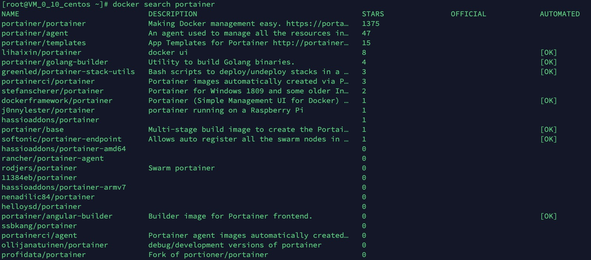
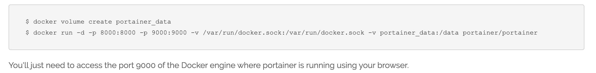
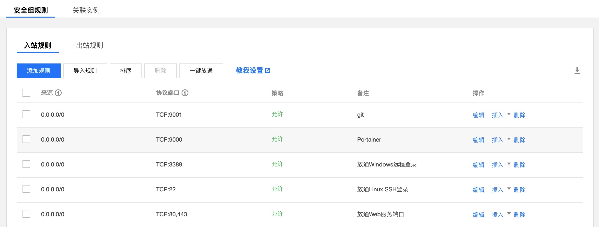

Docker + Docker Compose + Portainer搭建docker化云服务器环境
介绍
Docker:Docker 是一个开源的应用容器引擎
Docker Compose:Compose是用于定义和运行多容器Docker应用程序的工具。
Portainer:portainer是docker的图形化管理工具
Docker
安装 Docker
腾讯云大学 - 开发者实验室 - 搭建 Docker 环境
首先安装 Docker 必要依赖包 ：
1 | yum install -y yum-utils device-mapper-persistent-data lvm2 |
由于自带 yum 没有 Docker-CE 所以我们需要先增加 docker repo：
1 | yum-config-manager --add-repo https://download.docker.com/linux/centos/docker-ce.repo |
用 yum 安装 Docker：
1 | yum install -y docker-ce |
直接yum安装，安装成功后查看版本
1 | docker -v |
启动docker
1 | service docker start |
设置开机启动
1 | chkconfig docker on |
配置 Docker
Docker Compose
安装Docker Compose
Docker Documentation - Install Docker Compose
下载Docker Compose
1 | sudo curl -L "https://github.com/docker/compose/releases/download/1.24.1/docker-compose-$(uname -s)-$(uname -m)" -o /usr/local/bin/docker-compose |
将可执行权限应用于二进制文件
1 | sudo chmod +x /usr/local/bin/docker-compose |
查看是否安装成功
1 | [root@VM_0_10_centos ~]# docker-compose --version |
构建Docker Compose目录
新建目录,用以保存以下内容并上传到git服务器
- Docker Compose的配置docker-compose.yml
- Docker持久化的数据
1 | [root@VM_0_10_centos ~]# mkdir /weiwei |
Portainer
安装Portainer
Portainer installation using Docker
搜索Portainer镜像
1 | [root@VM_0_10_centos ~]# docker search portainer |

拉取Portainer镜像
1 | docker pull portainer/portainer |
运行Portainer
Docker运行Portainer
1
docker run -d -p 9000:9000 -v /var/run/docker.sock:/var/run/docker.sock -v portainer_data:/data portainer/portainer

1 | [root@VM_0_10_centos ~]# touch /weiwei/docker-compose.yml |
1 | version: "3" |
1 | # docker-compose命令需要在docker-compose.yml所在文件夹执行 |
访问Portainer
设置安全组规则 - 腾讯云 - 文档中心 - 安全组 - 开放9000端口

服务器ip:9000即可访问Portainer界面
首次登录输入用户名、密码即可创建管理员用户, 点击Create user
本地管理选择Local, 点击Connect.